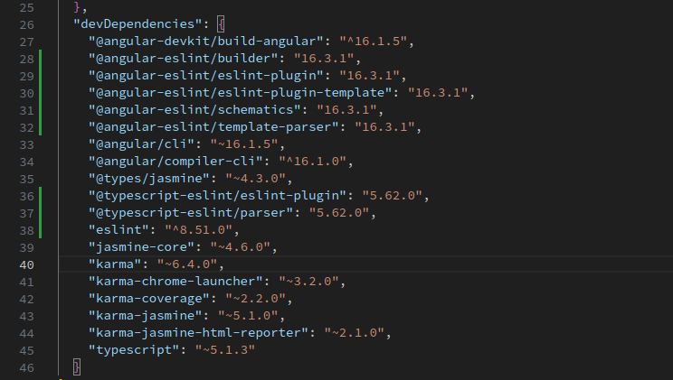
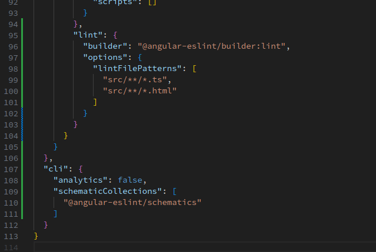

Como configurar ESLint en un proyecto de angular
NOTA: ES es acrónimo de EcmaScript este linter solo es para código JavaScrip/TypeScript
Partiendo de un proyecto base de Angular lanzamos el siguiente comando:
ng lint
Este comando normalmente lanzará el linter para hacer las comprobaciones, pero al partir de un proyecto nuevo nos preguntará si queremos instalar una serie de paquetes
En el package.json deberíamos de ver los siguientes paquetes (los relacionados con el eslint) en la lista:
En el archivo angular.json, deberíamos de ver la siguiente configuración:
Añadimos la siguiente configuración en el archivo .eslintrc.json:
Esta es una configuración personalizada que incluye:
{
"root": true,
"ignorePatterns": [
"projects/**/*"
],
"extends":[],
"overrides": [
{
"files": [
"*.ts",
],
"extends": [
"eslint:recommended",
"plugin:@typescript-eslint/recommended",
"plugin:@angular-eslint/recommended",
"plugin:@angular-eslint/template/process-inline-templates"
],
"rules": {
"semi": ["error"],
"indent": ["error"],
"@typescript-eslint/explicit-module-boundary-types": "error",
"@angular-eslint/directive-selector": [
"error",
{
"type": "attribute",
"prefix": "app",
"style": "camelCase"
}
],
"@angular-eslint/component-selector": [
"error",
{
"type": "element",
"prefix": "app",
"style": "kebab-case"
}
]
}
},
{
"files": [
"*.html"
],
"extends": [
"plugin:@angular-eslint/template/recommended",
"plugin:@angular-eslint/template/accessibility"
],
"rules": {}
}
]
}Una vez tenemos todo ejecutado podemos ver los errores de dos maneras:
Ejecutando el siguiente comando:
ng lint
Nos dará un listado de los archivos y en que linea tienen un fallo, si queremos tambien podemos lanzar el comando para que arregle todos los fallos posibles con la opción --fix:
ng lint --fix
El otro metodo es con el plugin ESLint para VSCode, este plugin nos marcará directamente los errores en rojo en el propio editor.
ESLint no usa el archivo .editorconfig, este es un archivo genérico de formato que pueden usar diversos programas, pero en este caso no, por lo tanto podemos tener información incongruente entre este archivo y el .eslintrc.json.
ESLint | configuracion